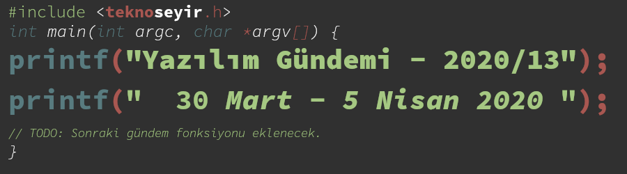
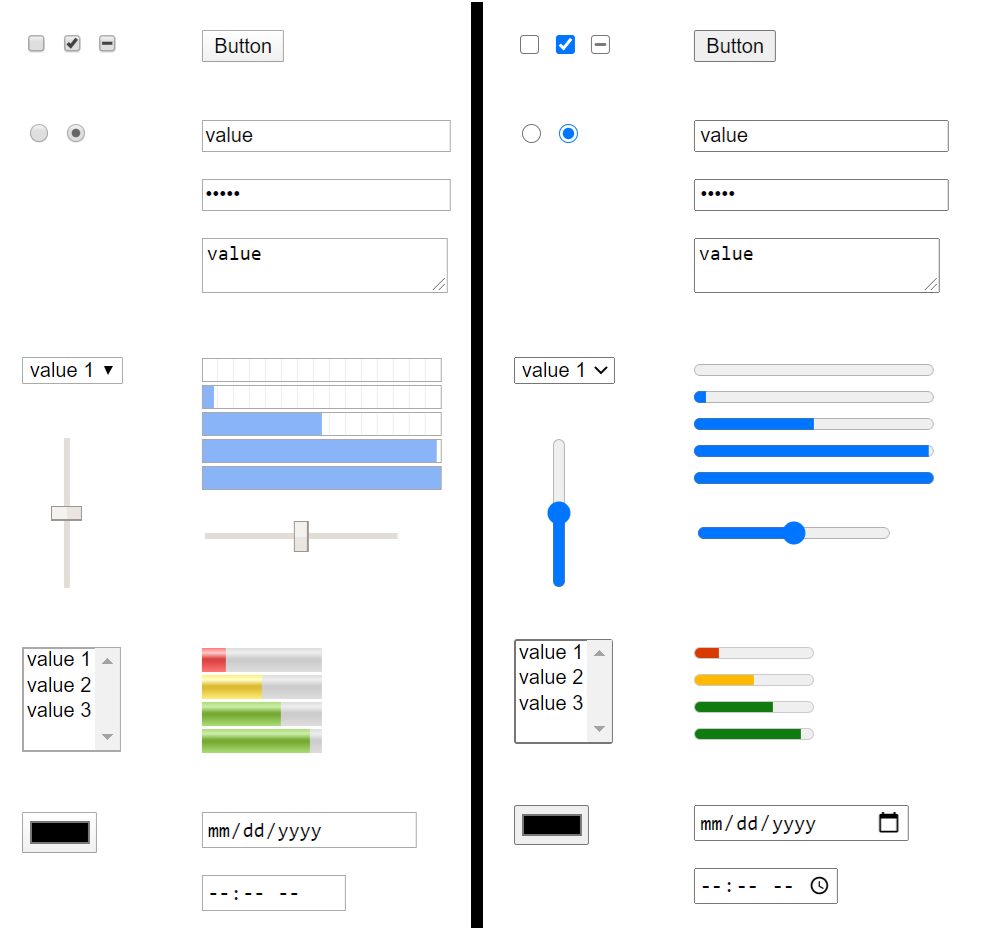
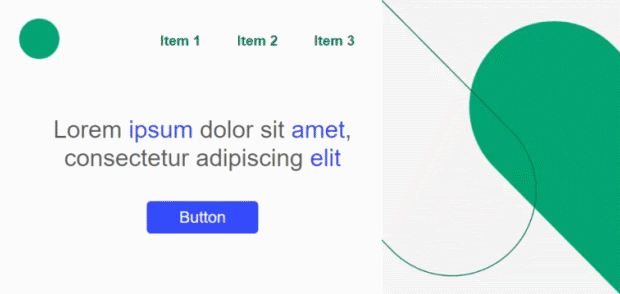
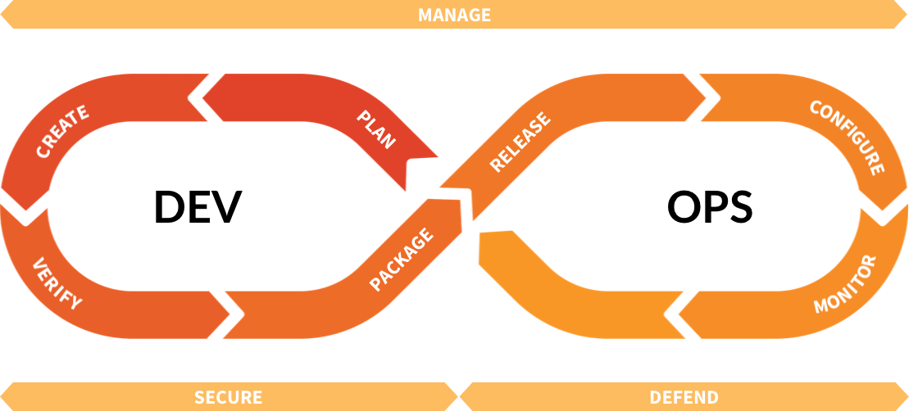
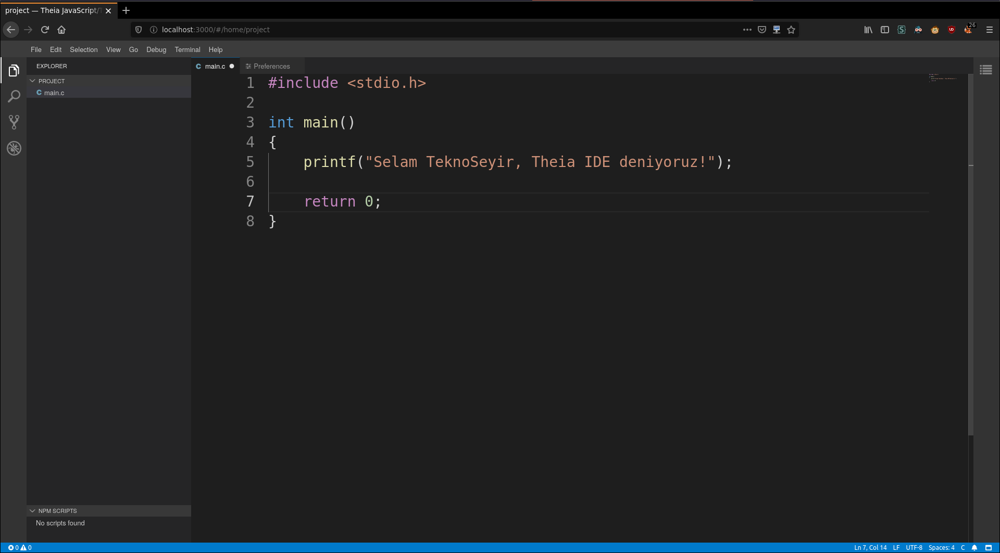
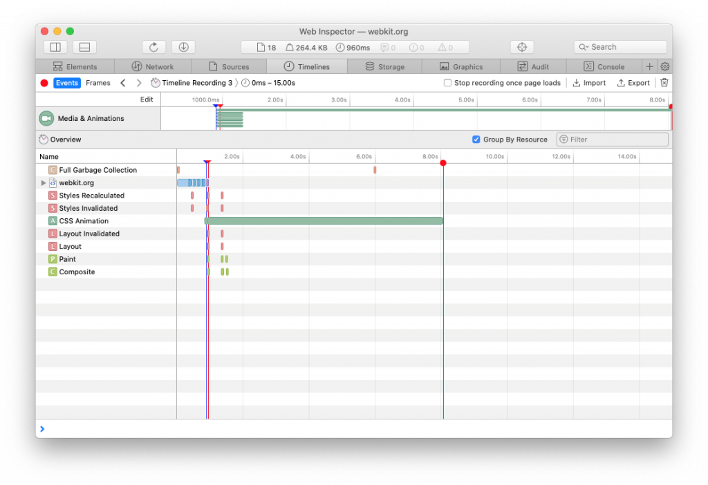
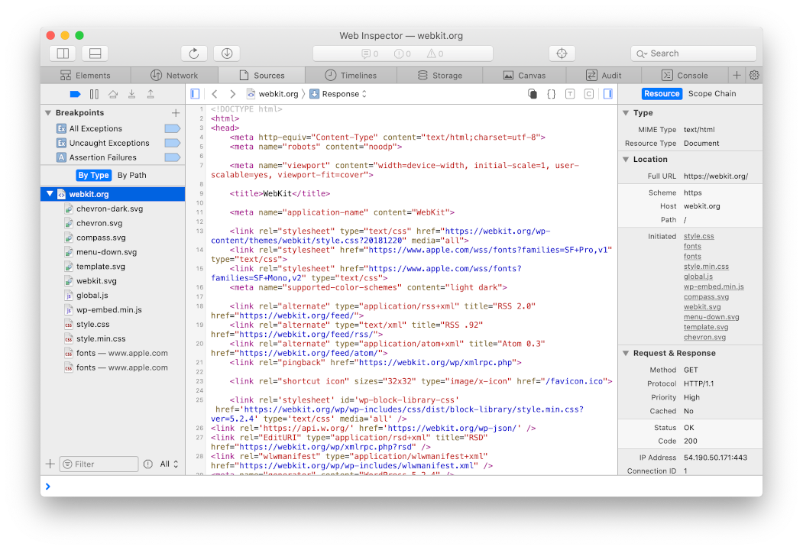
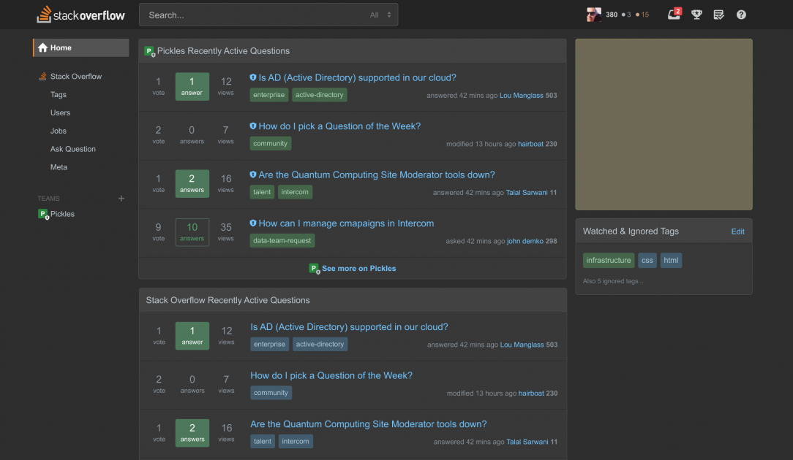
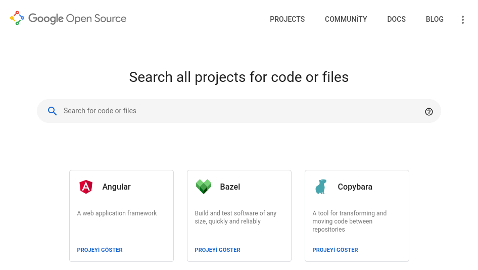

Yazılım Gündemi - 2020/13
30 Mart - 5 Nisan 2020
İçindekiler
- 1. Chromium tabanlı tarayıcılarda form elemanlarının varsayılan görünümü değişiyor
- 2. GitLab, 18 tane özelliğini açık kaynak yapmaya hazırlanıyor
- 3. Eclipse, VSCode alternatifi IDE'sini açık kaynak olarak duyurdu: Eclipse Theia
- 4. Covid-19 Pandemisi, NodeJS sürüm yayınlama takvimini de etkiledi
- 5. PHP 8 sürümünün yayın takvimi belli oldu
- 6. Safari 13.1 ile gelen yenilikler
- 7. StackOverflow'a karanlık mod özelliği beta olarak geldi
- 8. Google açık kaynak projeleri için kod arama sayfasını açtı
- 9. Diğer Haberler
- 10. Lisans

< Önceki Gündem | 30 Mart - 5 Nisan 2020 | Sonraki Gündem >
1 Chromium tabanlı tarayıcılarda form elemanlarının varsayılan görünümü değişiyor
Microsoft'un yeni Edge tarayıcısının ve Google'ın Chrome tarayıcısının da kullandığı Chromium açık kaynaklı tarayıcısının bu hafta blogunda yayınlanan yazı ile artık form kontrollerinin işletim sistemi değişmeksizin aynı görüneceği duyuruldu. Sorunun ne olduğunu anlamak için web geliştirme yapmış kişilerin mutlaka bir dönem kullandığı belki hala daha kullanıyor olduğu "reset.css" dosyasını hatırlatmak isterim. Hatırlamayan ya da bilmeyenler için bu dosya işletim sistemi ve tarayıcılardan kaynaklanan stil farklılıklarını temizleyen bir css dosyası. Sayfaya önce bu css dosyası eklenir, daha sonra kendi özel css dosyalarımız eklenirdi ki sayfamız tüm tarayıcılarda ve işletim sistemlerinde aynı gözüksün. Modern web dünyasında eskisi kadar ihtiyaç duymasak da Google Chromium ve Microsoft Edge takımları bunu dert edinmişler.

Şekil 2: (SOL): Chrome 80 ve önceki sürümlerdeki stillendirme. (SAĞ): Yeniden tasarlanan form elemanları.
Google'ın Chromium takımı ve Microsoft'un Edge takımının birlikte çalışması sonucu oluşmuş bu yeni form elemanları tasarımları Edge tarayıcısının son sürümünde kullanılmış fakat Chrome'un 81 numaralı sürümünde deneysel olarak kullanıma açılacakmış. Chrome 81'de bu tasarıma geçmek için: chrome://flags/#form-controls-refresh özelliğini aktifleştirmek yeterli olacak deniyor.

Aynı zamanda tarayıcıdaki bağlantı ve objeler üzerinde gezinmek için kullanabildiğimiz TAB tuşuyla birlikte ortaya çıkan "focus halkası" (focus ring) de yenilenmiş. Daha görünür olması için siyah renk ve beyaz çerçeve tercih edilmiş. Yine de bazı durumlarda görünmez olabileceği söylenmiş.
Yapılan diğer değişiklik ve yeniden tasarımlar için konu başlığına eklediğim bağlantıya tıklayabilirsiniz.
Sizce yeni tasarımlar nasıl oldu? Böyle bir değişikliğe gerek var mıydı? Yorumlar bölümünde konuşalım.
2 GitLab, 18 tane özelliğini açık kaynak yapmaya hazırlanıyor
Popüler uzak git sunucularından biri olan GitLab, bu hafta içerisinde yayınladıkları bir blog yazısı ile birlikte normalde ücretli sürümde olan 18 adet özelliği açık kaynak olan sürüme getireceklerini duyurdular. Fakat ilginç bir yöntemle. Özellikler GitLab'in şu 7 parçasının içerisinden alınacakmış: Plan, Create, Verify, Release, Configure, Defend.

Şekil 4: Yani Monitor hariç DevOps sürecinin diğer tüm kısımlardan bir şeyler açık kaynak olacak
İlginç bir yöntem dedim çünkü bu özellikleri açık kaynak yapmak için topluluktan yardım istiyorlar. Issue Export'dan, Web IDE'si için Web Terminal'a kadar birçok konuda "gelin bunları birlikte açık kaynak yapalım" diyorlar. Konu başlığına eklediğim blog yazısında açık kaynak yapmak istedikleri her özellik için açılan issue sayfalarının linklerini vermişler. İlgili issue sayfalarında yapılacaklarla ilgili bilgiler vermişler. Böylece insanlar da o konularla ilgili yardım edebiliyor.
Sonuçta GitLab'ın ücretli sürümünün kaynak kodlarına erişimi olan onlar ve doğal olarak oradan kendileri de açık kaynak hale getirebilirler ilgili parçaları (içerdeki kod yapısı hakkında bilgim yok tabii). Topluluktan yardım istemeleri bana biraz tuhaf geldi. Neyse yine de bizim işimize yarayacak şeyler olduğu için fazla kurcalamayayım :).
3 Eclipse, VSCode alternatifi IDE'sini açık kaynak olarak duyurdu: Eclipse Theia
Daha çok Java için IDE'si olmakta tanınan ama başka çözümleri de bulunan Eclipse Foundation, bu hafta içerisinde yeni hem bulutta hem de masaüstünde çalışabilen IDE'sini açık kaynak olarak tanıttı.
Proje aslında 2016 yılında Ericsson ve TypeFox firmaları tarafından başlatılmış fakat zamanla Eclipse Foundation gibi birçok firmanın katkılarıyla bu hale gelmiş. Proje şu an Eclipse Foundation altındaki Eclipse Cloud Development Tools Working Group (ECD WG) tarafından devam ettiriliyor. Aynı zamanda açık kaynakta olduğu için topluluğun katkılarına açık. Aynı zamanda Google Cloud, RedHat, Arduino, IBM gibi firmalar da projeye katkı yapmışlar.

Eclipse'in duyuru yazısında VSCode eklentilerini de bu IDE'de çalıştırabiliyorsunuz diyor fakat ben denemedim. Aynı yazıda Eclipse Theia ile VS Code arasındaki farklar olarak şu üç madde sıralanmış:
- Theia'nın mimarisi daha modüler ve özelleştirmelere daha uygun.
- Theia hem masaüstünde hem de bulutta çalışabiliyor.
- Theia topluluk-destekli ve Eclipse Foundation'ın bağımsız yönetimi tarafından geliştiriliyor.
Son maddeyi ben de tam anlamadım. VS Code'da zaten açık kaynak olduğu için topluluk katkı yapabiliyor ve Microsoft sürümlerini yayınlıyor. Büyük ihtimal yanlış anlamış ve çevirmiş olabilirim. Eğer yanlış anlamışsan, yorumlar bölümünde beni düzeltmekten kendinizi geri koymayın.
IDE'nin masaüstü uygulaması Electron tabanlı ve uzaktaki sunucu ile JSON-RPC mesajlarını HTTP ya da WebSocket üzerinden ileterek çalışıyor. Ben docker kullanarak kendi bilgisayarıma kurdum ve biraz kurcaladım. Eğer siz de denemek isterseniz bilgisayarınıza Docker kurduktan sonra aşağıdaki komutu açmak istediğiniz proje dizinindeyken çalıştırabilirsiniz (yalnız dosya kaydetme kısmında izinlerle ilgili bir hata veriyor, pek uğraşamadım çözmek için):
docker run --rm -it -p 3000:3000 -v "$(pwd):/home/project:cached" theiaide/theia
Bu yazılım gündemi yazılarını yazmaya başladığımdan beri fark ettim ki son bir yıldır herkes geliştiricilere bir uzaktan geliştirme çözümü üretmeye çalışıyor. Önümüzdeki birkaç senede popülerliği daha da artacaktır diye umuyorum "Cloud Development" (ya da ileride ne isim verirlerse) olayının. Siz bu konuda ne düşünüyorsunuz? Bu tarz çözümleri kullanır mıydınız ya da kullanıyor musunuz? yoksa "yok arkadaş ben o kadar yenilikçi değilim eski tip masaüstü uygulaması IDE ya da metin editörümle iyiyim" diyenlerden misiniz? yorumlar bölümünde konuşalım.
4 Covid-19 Pandemisi, NodeJS sürüm yayınlama takvimini de etkiledi
Tüm dünya olarak içinde bulunduğumuz süreçten elbette yazılım sektörü de payını almaya devam ediyor. Her ne kadar uzaktan çalışmaya en uygun mesleklerden biri bizimki olsa da, pratikte bazı şeyler düşünüldüğü gibi olmuyor. NodeJS takımı da olası sorunların önüne geçmek amacıyla bu hafta sürüm yayınlama takvimini güncelledi. Buna göre:
v10.xvev12.xdallarındaki bir sonraki sürüm 7 Nisan tarihinde çıkacak.v12.xdalındaki minor sürüm numaralarının yanın tarihleri ertelendi:v12.17.0: 26 Mayıs 2020v12.18.0: 25 Ağustos 2020
v13.xdalında, End of Life (hayatının sonu) tarihi olan Haziran 2020'ye kadar yeni bir sürüm yok.v14.xdalının ilk sürümü ise planlandığı gibi 21 Nisan 2020 tarihinde yayınlanacakmış.
Tarihlerle ilgili daha detaylı bilgiler için konu başlığına eklediğim bağlantıya tıklayabilirsiniz.
5 PHP 8 sürümünün yayın takvimi belli oldu
Aşağıdaki sürümlerin hepsi 2020 yılı içerisinde çıkacak.
| Sürüm | Yayınlanma Tarihi |
|---|---|
| 18 Haziran | Alpha 1 |
| 2 Temmuz | Alpha 2 |
| 16 Temmuz | Alpha 3 |
| 27 Temmuz | Feature freeze |
| 20 Temmuz | Beta 1 |
| 13 Ağustos | Beta 2 |
| 27 Ağustos | Beta 3 |
| 10 Eylül | Relase Candidate 1 |
| 24 Eylül | Relase Candidate 2 |
| 8 Ekim | Release Candidate 3 |
| 22 Ekim | Release Candidate 4 |
| 5 Kasım | Release Candidate 5 |
| 19 Kasım | Release Candidate 6 |
| 3 Aralık | Genel Erişilebilirlik (Final) |
6 Safari 13.1 ile gelen yenilikler
Geçtiğimiz haftaki yazılım gündemi yazısında (bkz: Yazılım Gündemi - 2020/12) Safari 13.1 ile birlikte tüm üçüncü parti çerezlerin engellenmeye başlandığını söylemiştim. Bu hafta ise Safari 13.1 ile birlikte gelen ve biz geliştiricileri ilgilendiren diğer birkaç özelliğe birlikte göz atalım.
6.1 JavaScript iyileştirlemeleri
Safari tarayıcısının bu sürümüyle birlikte artık replaceAll() fonksiyonu
desteklenmeye başlandı. Yani artık bu kullanım Safari'de de çalışacak:
"selam teknoseyir replace all deniyoruz".replaceAll(" ", "-"); // selam-teknoseyir-replace-all-deniyoruz
Ayrıca bu sürümle birlikte ?? operatörü de destekleniyor. Artık
değişkenlere şu kullanımla varsayılan değer atayabileceğiz:
const nullDeger = null const sonuc = nullDeger ?? "varsayılan"; // "varsayılan"
Yani yukarıda dedik ki nullDeger isimli değişken null ya da 0 ise sonuc
değişkenine "varsayılan" ifadesi ata.
6.2 Web Animations API

Safari'nin bu sürümüyle birlikte eklenen bu API sayesinde artık CSS animasyonlarını JavaScript tarafından yönetebileceğiz. Ayrıca tarayıcının Web Inspector aracına animasyonları gösterebilecek "Media & Animations" kısmı da eklenmiş.
6.3 Async Clipboard API
W3C tarafından yeni bir web standardı olarak tanımlanan bu yeni API sayesinde
artık kullanıcıların clipboard'larına asenkron olarak erişip, kopyaladıkları
metinleri web sayfamız içerisinde amacımıza uygun olarak kullanabileceğiz.
Asenkron olmasının avantajı bu işlemler gerçekleştirilirken web sayfamız
tıkanmayacak. Aynı zamanda bu yeni API ile birden fazla farkı türden içeriği
kullanıcının panosuna gönderebilecek ve programlamasal olarak "Yapıştır"
işlemi yapabileceğiz. Mesela bu sayede artık kullanıcının panosunda "http"
ile bağlayan bir ifade varsa bunu txtSiteUrl metin kutusuna "Yapıştır" gibi
işlemleri yapabileceğiz.
6.4 Sources Sekmesi

Tarayıcının Web Inspector aracına yeni eklenen bu sekme aslında önceki Resources ve Debugger sekmelerinin birleştirilmiş ve iyileştirilmiş hali. Üstelik artık yeni JavaScript Breakpoint'leri ile debug yapma özelliğine de sahip.
Safari 13.1 sürümüyle gelen ve biz geliştiricileri ilgilendiren diğer özellik ve değişiklikler için mutlaka konu başlığına eklediğim bağlantıya tıklayarak, ilgi sayfayı incelemeyi unutmayın.
7 StackOverflow'a karanlık mod özelliği beta olarak geldi

Başlığı okuyunca ben de sizin gibi "Şimdiye kadar nasıl olmaz bu?!" dedim ama yokmuş ve bu hafta eklenmiş. Aslında çeşitli eklentiler ile zaten biz karanlık mod yapabiliyorduk ama sitenin kendinden desteklemesi daha iyi oldu. Bugüne kadar olmaması başlı başına saçmalık zaten. Neyse geç olsun, güç olmasın diyelim.
Temayı aktifleştirmek için User Preferences sayfasını açın ve "Theme" kısmından istediğiniz temayı seçin ve işte! Artık geceleri StackOverflow'a girince far görmüş tavşan gibi bakmayacaksınız ekrana :)
8 Google açık kaynak projeleri için kod arama sayfasını açtı

Google açık kaynak takımının bu hafta blogunda yayınladığı yazı ile artık Google'ın tüm açık kaynak projelerinde arama yapabileceğimiz Code Search sayfası kullanıma açıldı. Bu adresten sayfayı açarak siz de Google'ın açık kaynak projeleri üzerinde dosya ya da kod araması yapabilirsiniz: https://cs.opensource.google/
Aynı zamanda Android açık kaynak projesi için de bu sayfayı ziyaret edebilirsiniz: https://cs.android.com/
9 Diğer Haberler
- Microsoft, Koronavirüs yüzünden artan Azure kullanımlarıyla başa çıkmaya çalışıyor.
- Google, Chroma'daki SameSite Cookie değişikliklerini geçici olarak geri aldı.
- Google servis yönetimini kolaylaştıracak yeni hizmetini beta olarak duyurdu: Service Directory.
- Unreal Engine Wiki kapatıldı. Tüm wiki arşivi buradan indirilebiliyor.
- Go dili için mikroservis framework'ü olan Go Micro, v2.4.0 sürümünü yayınladı.
- Nim programlama dilinin 1.2.0 sürümü yayınlandı.
- Idris 2 programlama dilinin 0.1.0 sürümü yayınlandı.
- Rust programlama dilinin dokümantasyon takımı kapatıldı.
- Kotlin için GraphQL kütüphanesi graphql-kotlin, 2.0.0 sürümünü yayınladı.
- VueJS kütüphanesinin v3.0.0-alpha.11 sürümü yayınlandı.
- Android için HTTP inspector aracı Chucker, v3.2.0 sürümünü yayınladı.
- Sourcetrail aracının 2020.1 sürümü yayınlandı.
- MultiCore OCaml projesi için Mart 2020 raporu yayınlandı.
- Sidekick Load Balancer aracı tanıtıldı.
- Prisma 2.0 Beta programı duyuruldu.
- RapidFuzz kütüphanesinin 0.6.3 sürümü çıktı.
- simdjson kütüphanesinin 0.3 sürümü yayınlandı.
- Kubie aracı tanıtıldı. GitHub Deposu
- Eclipse Dirigible 4.4 sürümü yayınlandı.
- Cortex v1.0 sürümü yayınlandı.
- dapr v0.6.0 çıktı.
- libgit2 v1.0.0 çıktı.
- sctructure v2.0.0 çıktı.
- SpaceVim v1.4.0 çıktı.
10 Lisans

Yazılım Gündemi - 2020/13 yazısı Eren Hatırnaz tarafından Creative Commons Atıf-GayriTicari-AynıLisanslaPaylaş 4.0 Uluslararası Lisansı (CC BY-NC-SA 4.0) ile lisanslanmıştır.